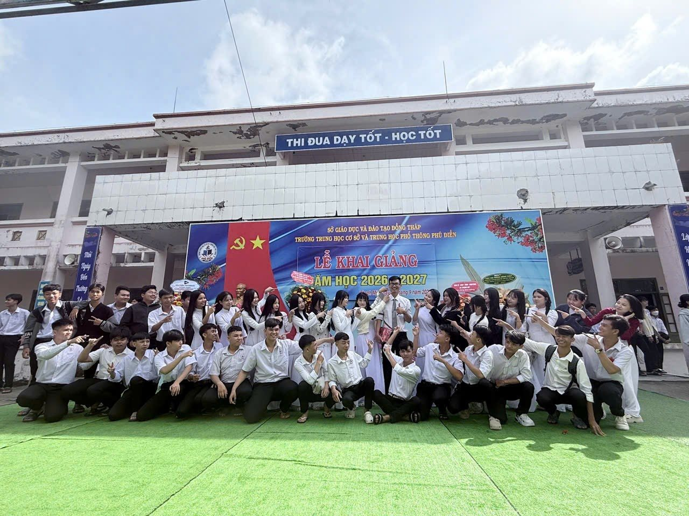

Trang 01 / 12
TRƯỜNG THCS & THPT PHÚ ĐIỀN • ĐỒNG THÁP
TRẠM KÝ ỨC 12A2
✦ Sổ Lưu Bút Kỹ Thuật Số • Niên Khóa 2026 - 2027 ✦

41 Trái Tim • Một Thanh Xuân Rực Rỡ"Có một mùa hoa phượng nở rồi tàn,
Nhưng tuổi 18 cùng 12A2 sẽ mãi nằm lại nơi trang giấy này..."
Sĩ số: 41/41
Trại: Nguyễn Sinh Sắc
Hạng Nhất Tuần